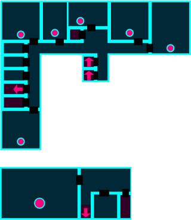

LBS inifrån
våning:

MATSALEN: här äter alla elever en jättegod lunch serverad av vår hjälte Marvin
REPSTUDION: här övar musikarna

våning:
MATSALEN: här äter alla elever en jättegod lunch serverad av vår hjälte Marvin
REPSTUDION: här övar musikarna
